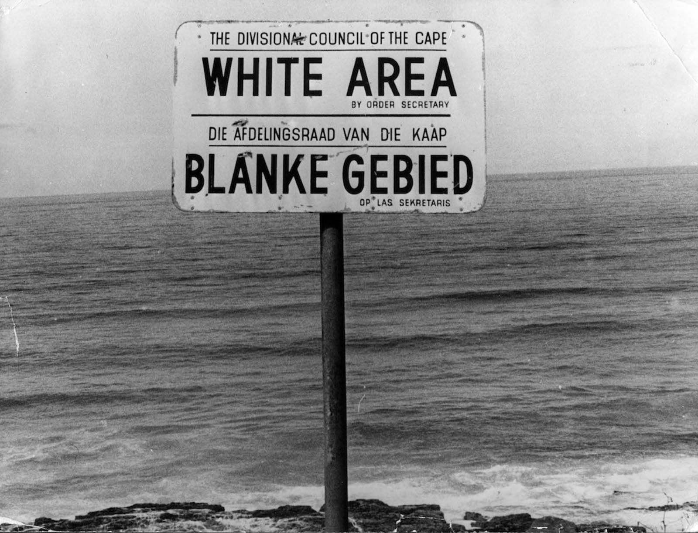

Posters!


Read more about The Purple March here!
Purple is a new colour of protest. I encourage you to plant purple flowers in your gardens or even out on the pavements! Lavenders and Dwarf Irises will be great for this! Come on by Daniels' Daisies and we will give you these seedlings and bulbs for free so you can get planting and protesting!
We are also selling beautiful purple floral arrangements in support of this movement. This is my favourite arrangement.
My flowers page includes the following statement: "To our white clients: Recognise your priviledge to easily come into our shop and buy flowers, to freely explore the parks and appreciate the flowers there. Flowers should not be political, their beauty should be celebrated with everyone, but that is not world we live in."
This sign on a Cape Town beach shows that these natural places of recreation are prohibited to people of colour. Our nature is politicised.
Even though Daniels' Daisies is open to all, take a moment to recognise how easy it is for you, our white clients, to get to our store.
If you do not care about your priviledge, we do not need your business.

Over 20,000 protesters took the streets of Cape Town towards City Hall. This march was led by Rev. Allan Boesak and Archbishop Desmond Tutu. This was a peaceful march, the police did not intervene.
Tutu claimed that "Today is a day on which we, the people, have scored a great victory for justice and peace."
Read more about this revolutionary march here!

This video says it all!